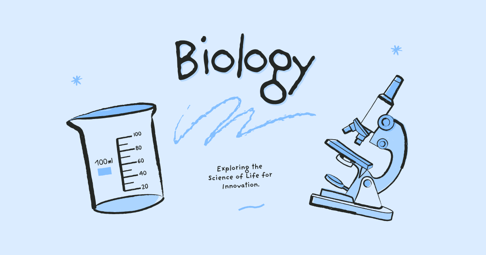

Biokimia Tumbuhan
Biokimia Tumbuhan: Mengungkap Proses Kimia yang Menopang Kehidupan Tumbuhan
Biokimia Tumbuhan merupakan mata kuliah dalam program studi Biologi yang mempelajari berbagai proses kimia dan molekuler yang berlangsung di dalam sel tumbuhan. Mata kuliah ini mengkaji bagaimana senyawa-senyawa biologis seperti karbohidrat, protein, lipid, asam nukleat, enzim, dan metabolit sekunder berperan dalam menjaga fungsi kehidupan tumbuhan. Melalui pemahaman biokimia, mahasiswa dapat mengetahui mekanisme yang mendasari pertumbuhan, perkembangan, reproduksi, dan adaptasi tumbuhan terhadap lingkungannya.
Biokimia Tumbuhan menjadi salah satu bidang penting dalam ilmu Biologi karena menjelaskan hubungan antara struktur molekul dengan fungsi biologis. Pengetahuan yang diperoleh dari mata kuliah ini tidak hanya bermanfaat untuk memahami kehidupan tumbuhan secara mendalam, tetapi juga menjadi dasar bagi berbagai aplikasi dalam pertanian, bioteknologi, farmasi, industri pangan, dan konservasi sumber daya hayati.
Apa Itu Biokimia Tumbuhan?
Biokimia Tumbuhan adalah cabang ilmu yang mempelajari komposisi kimia, reaksi metabolisme, serta mekanisme molekuler yang terjadi dalam organisme tumbuhan. Fokus utama bidang ini adalah memahami bagaimana molekul biologis diproduksi, diubah, dan digunakan untuk mendukung berbagai aktivitas kehidupan tumbuhan.
Dalam perkuliahan Biokimia Tumbuhan, mahasiswa mempelajari struktur dan fungsi biomolekul, metabolisme primer dan sekunder, fotosintesis, respirasi seluler, biosintesis hormon tumbuhan, aktivitas enzim, metabolisme nitrogen, serta berbagai jalur biokimia yang memungkinkan tumbuhan tumbuh dan beradaptasi. Pemahaman ini menjadi landasan penting untuk mempelajari berbagai aspek biologi modern yang berbasis molekuler.
Ruang Lingkup Biokimia Tumbuhan
Ruang lingkup Biokimia Tumbuhan mencakup berbagai proses kimia yang terjadi pada tingkat sel dan molekul dalam organisme tumbuhan.
- Struktur dan fungsi karbohidrat, protein, lipid, serta asam nukleat pada tumbuhan.
- Mekanisme kerja enzim dalam mengatur reaksi metabolisme.
- Fotosintesis sebagai proses konversi energi cahaya menjadi energi kimia.
- Respirasi seluler dan produksi energi untuk aktivitas biologis.
- Metabolisme nitrogen dan sintesis asam amino.
- Biosintesis dan fungsi hormon tumbuhan dalam pertumbuhan serta perkembangan.
- Metabolisme sekunder yang menghasilkan senyawa seperti alkaloid, flavonoid, dan terpenoid.
- Respons biokimia tumbuhan terhadap cekaman lingkungan dan serangan patogen.
- Teknik analisis biokimia untuk mengidentifikasi dan mengukur senyawa biologis.
Melalui kajian tersebut, mahasiswa dapat memahami proses-proses molekuler yang mendukung kehidupan tumbuhan serta kaitannya dengan berbagai fenomena biologis yang dapat diamati di alam.
Peran dalam Studi Biologi
Dalam program studi Biologi, Biokimia Tumbuhan berperan sebagai mata kuliah yang menjembatani ilmu biologi dengan kimia pada tingkat molekuler. Mata kuliah ini membantu mahasiswa memahami bagaimana berbagai proses biologis yang tampak pada organisme sebenarnya dikendalikan oleh interaksi molekul dan reaksi kimia yang kompleks.
Biokimia Tumbuhan juga menjadi dasar bagi berbagai bidang lanjutan seperti Biologi Molekuler, Fisiologi Tumbuhan, Genetika, Bioteknologi, Farmakognosi, dan Biologi Sel. Dengan memahami mekanisme biokimia, mahasiswa dapat menjelaskan berbagai fenomena biologis secara lebih mendalam dan ilmiah.
Manfaat dalam Masyarakat, Riset, dan Dunia Kerja
Pengetahuan Biokimia Tumbuhan memiliki banyak manfaat karena dapat diterapkan dalam berbagai sektor yang berkaitan dengan pemanfaatan dan pengelolaan sumber daya hayati.
- Mendukung pengembangan varietas tanaman yang lebih produktif dan tahan terhadap cekaman lingkungan.
- Membantu penelitian mengenai senyawa bioaktif yang berpotensi digunakan sebagai obat.
- Meningkatkan kualitas dan nilai tambah produk pangan berbasis tumbuhan.
- Mendukung pengembangan bioteknologi untuk pertanian dan industri.
- Membantu memahami mekanisme ketahanan tumbuhan terhadap penyakit dan hama.
- Menjadi dasar dalam eksplorasi sumber daya alam untuk produk farmasi dan kosmetik.
Lulusan yang menguasai Biokimia Tumbuhan memiliki peluang karier sebagai peneliti, analis laboratorium, ahli bioteknologi, staf pengembangan produk pangan, konsultan pertanian, tenaga industri farmasi, akademisi, maupun profesional di bidang lingkungan dan sumber daya hayati.
Tren Terkini dalam Biokimia Tumbuhan
Perkembangan teknologi analisis molekuler dan meningkatnya kebutuhan akan inovasi berbasis sumber daya hayati telah mendorong kemajuan pesat dalam bidang Biokimia Tumbuhan.
- Pemanfaatan metabolomik untuk mempelajari profil senyawa metabolit tumbuhan secara menyeluruh.
- Penelitian senyawa bioaktif tumbuhan untuk pengembangan obat dan produk kesehatan alami.
- Integrasi biokimia dengan genomika dan proteomika dalam memahami fungsi gen tumbuhan.
- Pengembangan tanaman yang lebih tahan terhadap perubahan iklim melalui pendekatan molekuler.
- Peningkatan penelitian mengenai antioksidan alami dan senyawa fungsional dari tumbuhan.
- Pemanfaatan kecerdasan buatan untuk analisis data biokimia dan metabolik yang kompleks.
- Pengembangan biofuel dan biomaterial berbasis metabolisme tumbuhan.
- Eksplorasi metabolit sekunder untuk industri farmasi, pangan, dan kosmetik berkelanjutan.
Tren-tren tersebut menunjukkan bahwa Biokimia Tumbuhan semakin berperan dalam menghasilkan inovasi yang mendukung kesehatan manusia, ketahanan pangan, serta pengelolaan sumber daya alam yang berkelanjutan.
Penutup
Biokimia Tumbuhan merupakan mata kuliah yang memberikan pemahaman mendalam mengenai proses kimia dan molekuler yang menjadi dasar kehidupan tumbuhan. Melalui kajian biomolekul, metabolisme, dan regulasi seluler, mahasiswa dapat memahami bagaimana tumbuhan tumbuh, berkembang, dan beradaptasi terhadap lingkungannya.
Dengan perannya yang penting dalam penelitian, pertanian, bioteknologi, dan industri berbasis hayati, Biokimia Tumbuhan menjadi salah satu bidang yang sangat strategis dalam studi Biologi. Penguasaan mata kuliah ini membuka peluang untuk berkontribusi dalam pengembangan ilmu pengetahuan, inovasi teknologi, serta pemanfaatan sumber daya hayati secara berkelanjutan di masa depan.
Mahasiswa Sabi
©Repository Muhammad Surya Putra Fadillah